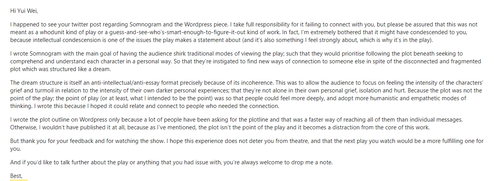
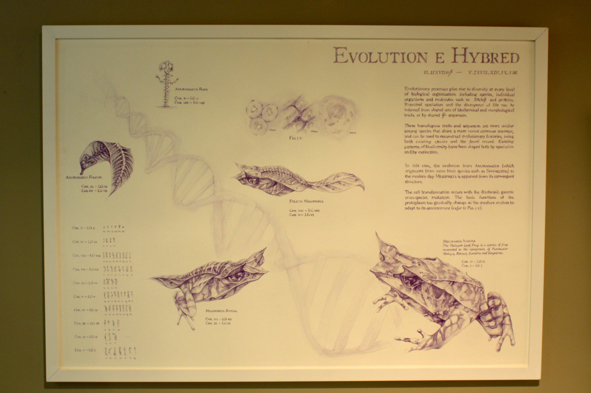
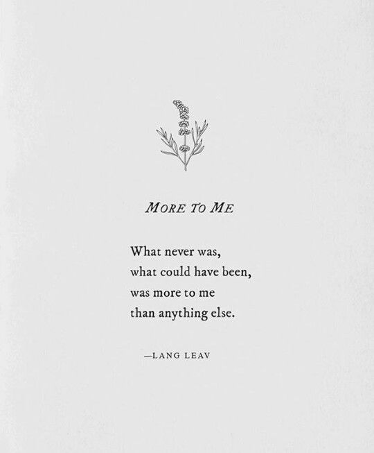
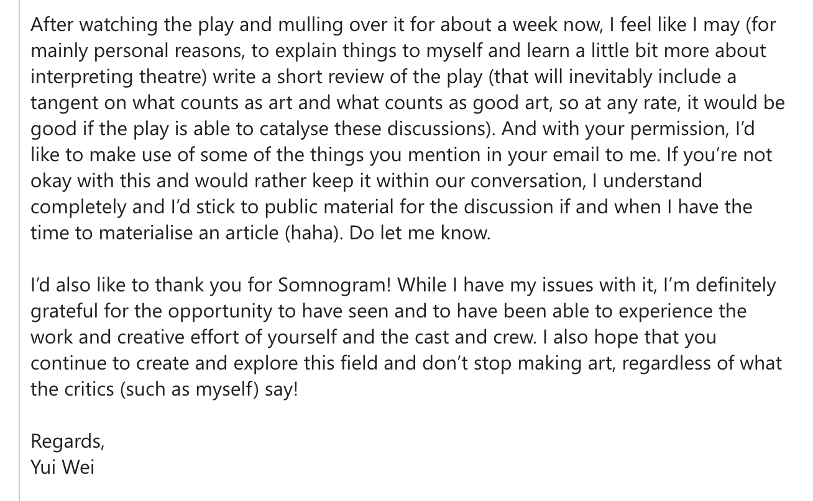

What is good art?
In a speech by Neil Gaiman, he famously advises the graduating students to “make good art”.
Gaiman doesn’t qualify what “good art” should be, but he does give us some hints in the second part of this clip. First of all, Gaiman says you should make “your art”, “what only you can do”; something unique. And secondly, there should be vulnerability: “When you feel that just possibly, you’re walking down the street naked, exposing too much of your heart and your mind…showing too much of yourself, that’s the moment you may be starting to get it right”. It seems that Gaiman believes that good art should communicate something about the artist, in its uniqueness, or vulnerability.
When I first saw this, I thought this was something easy: to “put yourself in the artwork”. In junior college, my final artwork was an installation about fact and fiction, and how museums toe the line between the two. I thought this was plenty personal. I liked museums, and I put effort into the pieces in the installation.
But through the past four years of looking at art and continuously asking myself this question: “What is good art?”, I’ve been able to interact with Gaiman’s speech again and again, and come up with guidelines for making art that is personal.
In my second year, I saw a play put up by the USP Productions crew, called Somnogram. Many people said they didn’t understand the play after watching it, and the playwright/director had subsequently written an article that explained the plot(s) and timelines, and pointed out the play’s own symbolism.
Back then, I was certain that Somnogram was not “good art” based on its content. The lighting was dramatic and the sound design was immersive, but I felt that the characters had been trite and unrelatable. I also felt that the subsequent ‘explanation’ article was insulting to the audience. Saying that the audience “[wasn’t] meant to” understand the plot, “But if [they] did, it’s a bonus.” seemed to suggest that the plot was only accessible to those ‘smart enough’. I had tweeted these thoughts. To my surprise, the playwright/director looked my Twitter handle up in the NUS directory:
Rarely are we privy to the original intentions behind artworks, so the last sentence made me stop and think. She wanted to connect to people, to be relatable – to make, in my definition, good art. Yet I did not connect with her play, nor her explanation and emails. Why?
To me, the play had been too impersonal. It’s original sentiments had been intellectualised and distanced so much that they weren’t discernible in the play itself. The director’s emails make this clear. In the highlighted paragraph of the first email, she says she wanted to create a play that would make the audience prioritise feeling over thinking, and discusses the use of the dream structure to accomplish that. In her later emails, which I cannot disclose, she tells me a very personal story on why she wanted to do that.
But when I was watching it, I could not share those sentiments because they had been abstracted into the incoherent structure of the play. It seemed less like the “good art” ideal shared by the director and I, and more like a formal experiment, with a hypothesis like “people will focus on feeling more than thinking if the plot is incoherent”.

Looking back at my A level art, I realise that it suffers from the same intellectualisation that I criticise Somnogram for. This is one of my favourite parts of the installation, where I show an “alternative natural history” where animals were “evolved” from plants. I thought about how museums could construct narratives that weren't true, and then abstracted that into a broad topic, the “evolution of ideas”. The development board for that topic is pictured below - it shows how I thought about piecing together facts into imagined narratives.
Doing that had brought me further away from my original sentiments. So, to put it in Gaiman’s terms – was my installation good art? Was it unique? Perhaps. But vulnerable? Definitely not as much as I would like it to be. Perhaps if I had focused more on the feeling that had made me want to create a museum-like installation than trying to explain it, my installation might have had more heart to it.
Furthermore, in the article she wrote after the play and her emails to me, she explained the plot and highlighted its own symbolism. For me, that created too little room for interpretation. I am told what to think and what to feel; I don’t have the opportunity to think and feel with her. I couldn’t relate to it. So how do we make a work that is not only personal, but communicates that quality? In the email, she says she wanted people to understand the characters “in relation to the intensity of their own darker personal experiences”, but is that really how we connect to good art? Should we only understand someone else's experience in light of our own?
Recently, internet poets like Rupi Kaur and Lang Leav have attained commercial success, with many bestselling books.

I’ve always found these poems to be somewhat lacking. Recently, a spoken word poet, Trevor Viloria, made a series of tweets talking about the difference between relating and empathising.
I realised that, where poems such as the Lang Leav one above make the reader, as Viloria says, “put their own heart” into them by filling in the words with their own experience, the director of Somnogram had left us with no room to empathise, by directly telling us what we should get from the play. To make good art, it seems, we have to do a tough balancing act. We have to toe the line between saying too little, and saying too much.
To finish off this post, I’ll share my original reason for writing it, from two years ago. This was in my reply to Somnogram’s director’s email:

That review never materialised. It was too difficult to write.
But when I first shared my idea for this post to the class, Prof Ryan mentioned that I was nervous – and I was. I feel vulnerable putting my views on what “good art” is in public. Art is a tough topic to write about because everyone interprets it differently and each interpretation is usually very personal. But I really wanted to write about this, ever since I thought about it two years ago when I was replying to Somnogram's director. So perhaps like Gaiman says, vulnerability is a sign that you're going in the right direction. And, although my views here are only mine, I hope that you, my reader, will be able to empathise with it, even if you can’t relate.